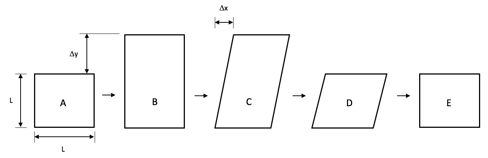

Strain Formulations in Solid Mechanics
The solid mechanics module offers three different types of strain calculation: Small linearized total strain, small linearized incremental strain, and finite incremental strain.
Small Linearized Total Strain
For linear elasticity problems, the Solid Mechanics module includes a small strain and total strain material ComputeSmallStrain. This material is useful for verifying material models with hand calculations because of the simplified strain calculations.
Linearized small strain theory assumes that the gradient of displacement with respect to position is much smaller than unity, and the squared displacement gradient term is neglected in the small strain definition to give: For more details on the linearized small strain assumption and derivation, see a Continuum Mechanics text such as Malvern (1969) or Bower (2009), specifically Chapter 2.
Total strain theories are path independent: in MOOSE, path independence means that the total strain, from the beginning of the entire simulation, is used to calculate stress and other material properties. Incremental theories, on the other hand, use the increment of strain at timestep to calculate stress. Because the total strain formulation ComputeSmallStrain is path independent, no old values of strain or stress from the previous timestep are stored in MOOSE. For a comparison of total strain vs incremental strain theories with experimental data, see Shammamy and Sidebottom (1967).
The input file syntax for small strain is
[Physics<<<{"href": "../../syntax/Physics/index.html"}>>>]
[SolidMechanics<<<{"href": "../../syntax/Physics/SolidMechanics/index.html"}>>>]
[QuasiStatic<<<{"href": "../../syntax/Physics/SolidMechanics/QuasiStatic/index.html"}>>>]
[./block1]
strain<<<{"description": "Strain formulation"}>>> = SMALL #Small linearized strain, automatically set to XY coordinates
add_variables<<<{"description": "Add the displacement variables"}>>> = true #Add the variables from the displacement string in GlobalParams
[../]
[]
[]
[]Incremental Small Strains
Applicable for small linearized strains, MOOSE includes an incremental small strain material, ComputeIncrementalStrain. As in the small strain material, the incremental small strain class assumes the gradient of displacement with respect to position is much smaller than unity, and the squared displacement gradient term is neglected in the small strain definition to give: As the class name suggests, ComputeIncrementalStrain is an incremental formulation. The stress increment is calculated from the current strain increment at each time step. In this class, the rotation tensor is defined to be the rank-2 Identity tensor: no rotations are allowed in the model. Stateful properties, including strain_old and stress_old, are stored. This incremental small strain material is useful as a component of verifying more complex finite incremental strain-stress calculations.
The input file syntax for incremental small strain is
[Physics<<<{"href": "../../syntax/Physics/index.html"}>>>]
[SolidMechanics<<<{"href": "../../syntax/Physics/SolidMechanics/index.html"}>>>]
[QuasiStatic<<<{"href": "../../syntax/Physics/SolidMechanics/QuasiStatic/index.html"}>>>]
[./all]
strain<<<{"description": "Strain formulation"}>>> = SMALL
incremental<<<{"description": "Use incremental or total strain (if not explicitly specified this defaults to incremental for finite strain and total for small strain)"}>>> = true
add_variables<<<{"description": "Add the displacement variables"}>>> = true
eigenstrain_names<<<{"description": "List of eigenstrains to be applied in this strain calculation"}>>> = eigenstrain
generate_output<<<{"description": "Add scalar quantity output for stress and/or strain"}>>> = 'strain_xx strain_yy strain_zz'
[../]
[../]
[../]
[]Finite Large Strains
For finite strains, use ComputeFiniteStrain in which an incremental form is employed such that the strain increment and the rotation increment are calculated.
Incremental Deformation Gradient
The finite strain mechanics approach used in the MOOSE solid_mechanics module is the incremental corotational form from Rashid (1993). In this form, the generic time increment under consideration is such that . The configurations of the material element under consideration at and are denoted by , and , respectively. The incremental motion over the time increment is assumed to be given in the form of the inverse of the deformation gradient of with respect to , which may be written as
where is the incremental displacement field for the time step, and is the position vector of materials points in . Note that is NOT the deformation gradient, but rather the incremental deformation gradient of with respect to . Thus, where is the total deformation gradient at time .
For this form, we assume
In solid mechanics, there are two decomposition options to obtain the strain increment: TaylorExpansion and EigenSolution, with the default set to TaylorExpansion. See the ComputeFiniteStrain for a description of both decomposition options.
Large Strain Closed Loop Loading Cycle
It is important to note that some inaccuracies are inherently present in incremental (hypoelastic) representations of finite strain behavior. This is an issue for the MOOSE implementation discussed here, as well as the implementations of other major commercial codes. The magnitude of the error increases as the magnitude of the strain increases, so this is typically only a practical issue for very large strains, for which hyperelastic models are more appropriate. This can be demonstrated with the closed loop loading cycle illustrated in Figure 1. Since the initial and final configurations are the same, with elastic material, one would expect that the stress would return to zero in the final undeformed state. With this incremental formulation, however, a residual stress remains, and the magnitude of that residual stress increases with the magnitude of the loading cycle. This occurs because the integral of the rate-of-deformation over the full loading cycle is not zero. A detailed explanation can be found in Belytschko et al. (2003).

Figure 1: Closed loop large deformation loading cycle.
Volumetric Locking Correction
In ComputeFiniteStrain is calculated and can optionally include a volumetric locking correction following the B-bar method: where is the average value for the entire element.
Once the strain increment is calculated, it is added to the total strain from . The total strain from must then be rotated using the rotation increment.
The input file syntax for a finite incremental strain material is
[Physics<<<{"href": "../../syntax/Physics/index.html"}>>>]
[SolidMechanics<<<{"href": "../../syntax/Physics/SolidMechanics/index.html"}>>>]
[QuasiStatic<<<{"href": "../../syntax/Physics/SolidMechanics/QuasiStatic/index.html"}>>>]
[./all]
strain<<<{"description": "Strain formulation"}>>> = FINITE
add_variables<<<{"description": "Add the displacement variables"}>>> = true
[../]
[../]
[../]
[]References
- Ted Belytschko, Wing Kam Liu, and Brian Moran.
Nonlinear Finite Elements for Continua and Structures.
John Wiley & Sons, West Sussex, England, 2003.[BibTeX]
- A. F. Bower.
Applied Mechanics of Solids.
CRC press, 2009.[BibTeX]
- Lawrence E Malvern.
Introduction to the Mechanics of a Continuous Medium.
Prentice-Hall, 1969.[BibTeX]
- MM Rashid.
Incremental kinematics for finite element applications.
International Journal for Numerical Methods in Engineering, 36(23):3937–3956, 1993.[BibTeX]
- MR Shammamy and OM Sidebottom.
Incremental versus total-strain theories for proportionate and nonproportionate loading of torsion-tension members.
Experimental Mechanics, 7(12):497–505, 1967.[BibTeX]